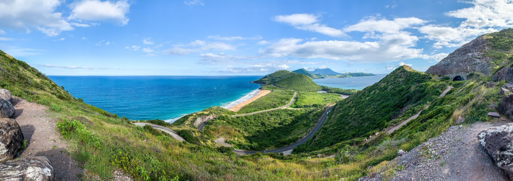
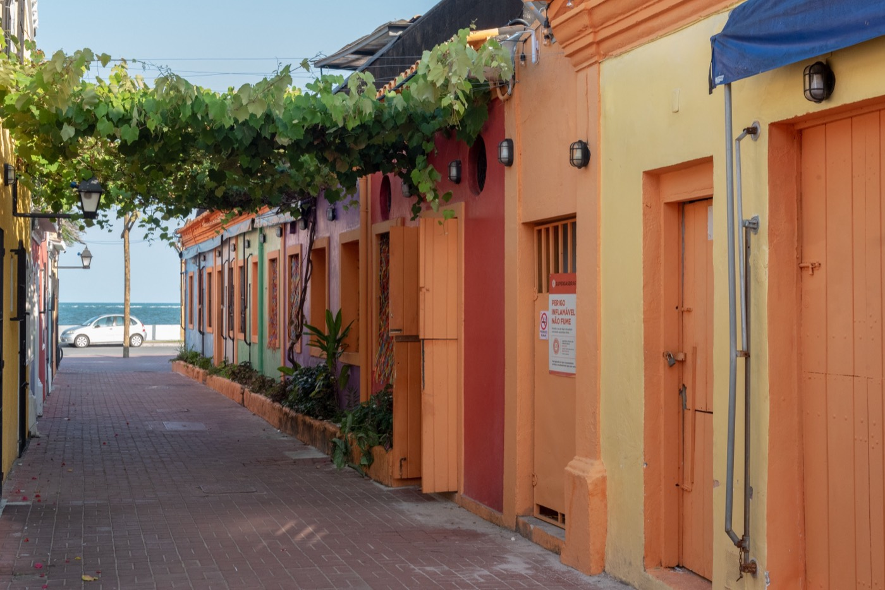

Moving to St Kitts & Nevis in 2026
Home of the world's oldest citizenship-by-investment program (since 1984), zero income tax, one of the Caribbean's strongest passports, and Level-1 safety. Here's the cost and the fine print.

St Kitts & Nevis invented the concept: its citizenship-by-investment program, launched in 1984, is the oldest in the world. That gives it a track record no rival can match, plus a genuinely powerful passport, zero tax on income, capital gains, and inheritance, and Level-1 safety. It's a tax-neutral base for people who can buy in — but a poor fit for anyone stretching a modest pension, since there's no cheaper retiree route.
Citizenship by investment (the original, from $250K)
Fast (3–6 months), remote, and with no residency requirement:
- Sustainable Growth Fund donation: from $250,000 (roughly $275K–$305K all-in for a family of four).
- Real estate: from about $325,000–$400,000 in an approved project.
- Passport: one of the Caribbean's strongest — visa-free to ~167 countries including the UK and Schengen (US requires a visa, but a 10-year visitor visa is available).
2026 changes to watch: a proposed 30-day minimum residency (not yet in force) and mandatory biometric enrollment.
Taxes: zero
No personal income tax, no capital-gains tax, no wealth or inheritance tax. (Becoming a tax resident requires spending 183+ days a year; US citizens keep their IRS obligations regardless.)
Cost of living
About 45% cheaper than the US, though pricier than most Caribbean islands because this tiny nation (~53,000 people) imports nearly everything. A single person spends $700–$1,400/month excluding rent; a Frigate Bay one-bedroom runs ~$850. The EC dollar is pegged at 2.70 to US$1.
Is St Kitts safe?
Yes — Level 1, with low crime and long political stability. Most incidents are petty (pickpocketing in busy areas) and rarely target visitors; the areas just outside Basseterre can feel rough after dark, so use ordinary sense. Hurricanes are the main natural risk.
Healthcare
Basic public care (the JNF General Hospital on St Kitts, Alexandra on Nevis) plus private clinics around Frigate Bay. Serious cases evacuate to Puerto Rico or Miami, so carry private insurance ($200–$400/month) with evacuation cover.
Where expats actually live

Frigate Bay is the standout expat hub — security, beaches, an active social scene — along with the Southeast Peninsula (Christophe Harbour) and, more tranquilly, Nevis around Charlestown. Handily, many CBI-eligible properties sit in exactly these neighborhoods.
Is St Kitts & Nevis right for you?
- Great fit if: you want a proven second passport, a tax-neutral base, and a safe, stable, English-common-law jurisdiction.
- Think twice if: you're on a modest budget expecting mainland conveniences at low prices — this is a place you buy into.
Relocating is step one. Owning the home is step two.
SORA designs and builds homes across the tropics — with our deepest roots in Panama and Costa Rica, where residency is straightforward and building costs a fraction of the coastal Caribbean. If your move is really about a place of your own in the sun, it is worth seeing what a fixed-price build looks like before you commit to any one island.
Frequently asked questions
How much is St Kitts & Nevis citizenship by investment?
From $250,000 via a Sustainable Growth Fund donation (roughly $275,000–$305,000 all-in for a family of four), or from about $325,000–$400,000 in approved real estate. It's the world's oldest such program (since 1984), takes 3–6 months, requires no residency, and the passport reaches ~167 countries visa-free.
Does St Kitts & Nevis have income tax?
No — there's no personal income tax, capital-gains tax, wealth tax, or inheritance tax. Becoming a formal tax resident requires spending 183+ days a year in the country. US citizens keep their worldwide IRS obligations regardless of a second passport.
How much does it cost to live in St Kitts & Nevis?
About 45% cheaper than the US, though pricier than most Caribbean islands because nearly everything is imported. A single person spends $700–$1,400/month excluding rent, with a Frigate Bay one-bedroom around $850. The EC dollar is pegged at 2.70 to US$1.
Is St Kitts & Nevis safe?
Yes — the US State Department rates it Level 1, with low crime and long political stability. Most incidents are petty theft that rarely targets visitors; use normal caution just outside Basseterre after dark. Hurricanes are the main natural risk.
Sources & verification
Figures in this guide were checked against primary and authoritative sources on 27 July 2026. Immigration, tax, and cost figures change — always confirm the current rules with the official body or a licensed professional before acting.
- St Kitts & Nevis Citizenship by Investment Unit — official CBI program authority
- US State Department — St Kitts & Nevis — travel advisory (Level 1)
- Global Citizen Solutions — St Kitts & Nevis — corroborating cost & CBI data